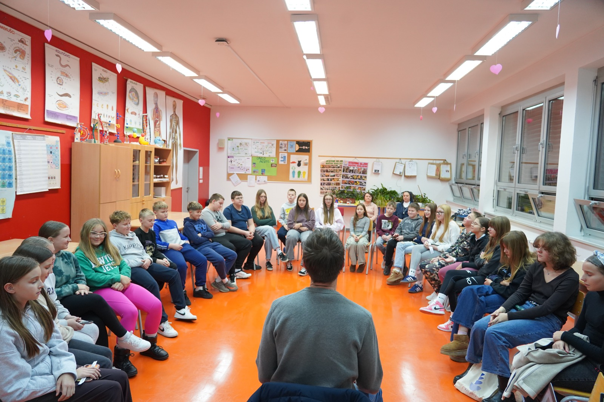
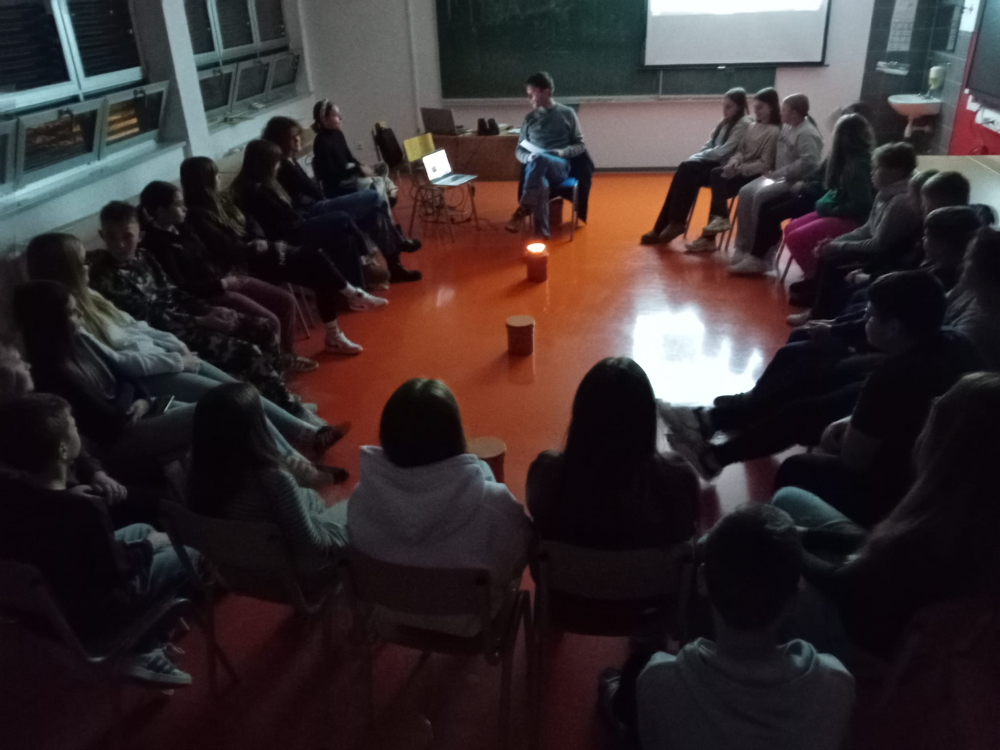

Istina
iskrenost i integritet
Iz škole u zajednicu
Osobni osvrt na radionicu o Vukovaru, obnovi zajednice i vrijednostima koje nas povezuju.

U školi u Salinovcu održao sam radionicu za starije učenike posvećenu pitanju što jedno mjesto čini domom. Želio sam otvoriti prostor za razgovor o ljudima, odnosima i vrijednostima koje nas povezuju te o tome kako svatko od nas može pridonijeti svojoj zajednici.
Polazište mi je bio učenicima blizak Salinovec, a temu sam povezao s Vukovarom i obnovom zajednice. Uz obnovu kuća i ulica, važno je promišljati i o povjerenju, pripadnosti i međusobnoj podršci. Pitanje koje sam stavio u središte radionice glasi: na kojim bismo vrijednostima ponovno izgradili svoje mjesto?
Pet temeljnih vrijednosti i primjeri njihove primjene u svakodnevnim postupcima.
iskrenost i integritet
ustrajnost i marljivost
strpljenje, smirenost i zadovoljstvo
brižnost, suosjećanje i velikodušnost
poštovanje, zajedništvo i briga za prirodu

Čovjek koji je sadio drveće
Za radionicu sam odabrao ulomak priče Jeana Gionoa „Čovjek koji je sadio drveće”. Pastir koji godinama sadi stabla, bez očekivanja osobne koristi, otvara temu ustrajnosti, nesebičnosti i brige za one koji dolaze nakon nas. Priča mi je poslužila kao polazište za pitanje kako djela jednog čovjeka mogu mijenjati život cijele zajednice.
Priča je dobila i animiranu adaptaciju Frédérica Backa iz 1987. godine. Film je 1988. osvojio Oscara za najbolji kratki animirani film.
Pogledajte film na YouTubeuRadionicu sam osmislio kao 45-minutni susret koji povezuje razgovor, kratko usmjeravanje pozornosti na dah, slušanje priče uz prigušeno svjetlo te osobno promišljanje i dijeljenje ideja. Takav slijed daje prostor za mirnije slušanje i povezivanje priče s vlastitim životom.
Očekivani ishodi učenja
Očekivao sam da učenici nakon radionice mogu:
U krugu dobrote
Ovakav pristup povezujem s nacionalnim projektom EIHV-a „U krugu dobrote” i udžbenicima „Budi dobar, vidi dobro, čini dobro”, koji obrađuju iste vrijednosti. Radionicu vidim i kao poticaj za nastavak rada u razredu: od razgovora o dobroti prema malim, konkretnim djelima u školi i mjestu u kojem živimo.
Kad biste danas posadili jedno simbolično stablo za budućnost svojeg mjesta, koju biste vrijednost željeli da ono predstavlja?
PDF donosi izvještaj s fotografijama. Word sadrži i prostor za unos podataka, izjava učenika i kraću objavu za društvene mreže.
Što čini jedno mjesto domom?
U školi u Salinovcu održao sam radionicu za starije učenike o Vukovaru, obnovi zajednice i vrijednostima koje nas povezuju. U središte sam stavio pitanje: na kojim bismo vrijednostima ponovno izgradili svoje mjesto?
Kao poticaj odabrao sam priču „Čovjek koji je sadio drveće” Jeana Gionoa. Pastirova ustrajnost i nesebična sadnja stabala otvaraju važnu temu: kako naša današnja djela mogu pomoći onima koji dolaze nakon nas?
Želio sam potaknuti učenike da prepoznaju istinu, ispravno djelovanje, mir, ljubav i nenasilje u svakodnevnim postupcima te osmisle vlastito dobro djelo za zajednicu.
A koju biste vi vrijednost posadili za budućnost svojeg mjesta?
Mihovil Mašović
#EIHV #UKruguDobrote #LjudskeVrijednosti #Salinovec #Dobrota #Zajedništvo